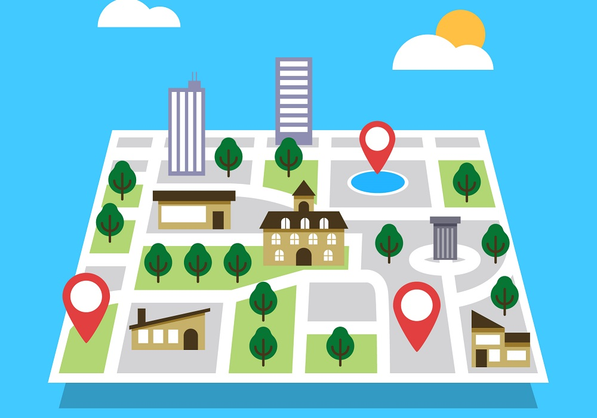

Mapeo
Un mapeo es el procedimiento
o práctica
por el cual se
construye un relato colectivo
que nos permite relacionarnos
de otra
manera con el territorio
y construir miradas
críticas
sobre lo que nos rodea.

Iniciativa
Tiene que ver con:
Iniciativas Sociales
Ideas Innovadoras
Emociones
Cuidados

Ayuda
Ayuda a:
Aplicar innovación
Comunicar iniciativa ciudadana
Utilizar la cartografía

Difusión
Funciona si:
Facilita la difusión
Compone una base de datos
Documenta y fomenta encuentros